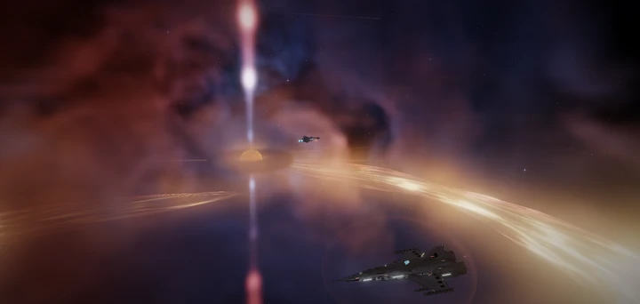
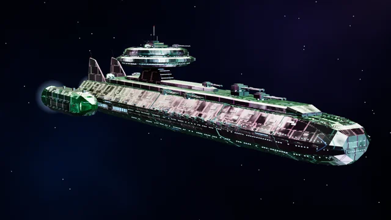
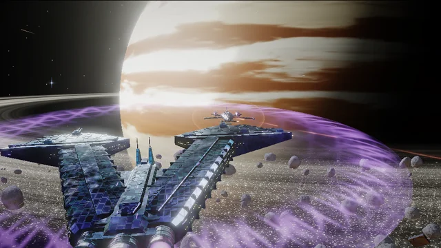

Play
Fly it yourself. Pick any two ships and fight at Tauri-B, over Veyrath or Caelora, at the Gate, in the Rings, by the Station or at the Star Base.
- Climb and dive, rapid speed turns, self-destruct
- Keyboard; needs a browser with WebGL2

Fleet · 3DShipyard
Every cruiser and destroyer in 3D, laid out as its spec sheet with top, side and front blueprints.
- Twelve ships: a cruiser and a destroyer for each race
- Drag to orbit, wheel to zoom

FilmThe Film
The Qin Sovereign and the Meer Reclamation meet at Tauri-B.
- A cinematic sequence, about a minute and a half